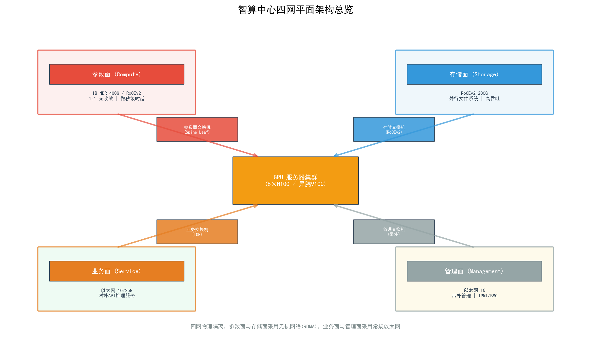
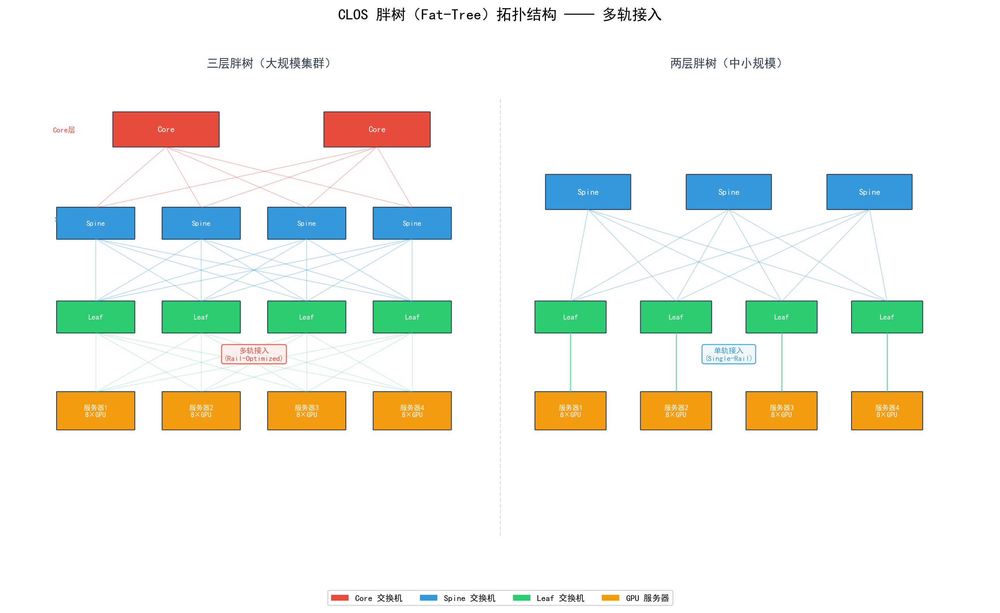
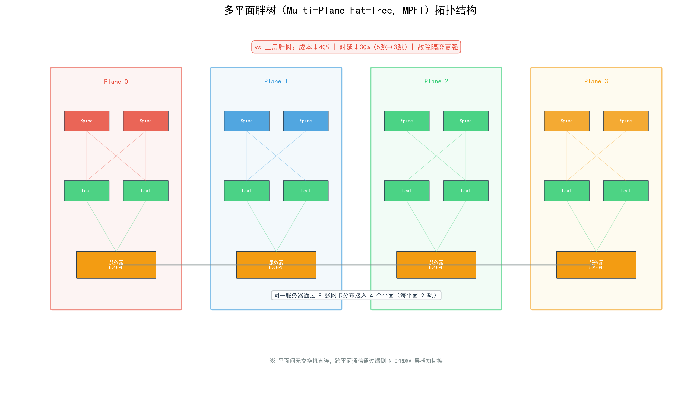
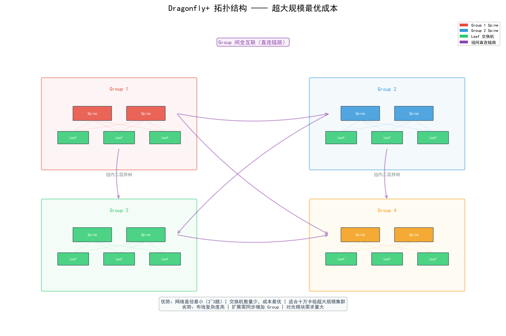

详细文字说明稿
2025–2026 版 ｜ 包含硬件配置·组网方案·成本分析·售前实战
智算解决方案售前专业知识体系
详细文字说明稿
配套 PPT《智算解决方案售前专业知识体系》深度展开版
2025–2026 版 | 包含硬件配置·组网方案·成本分析·售前实战
第一章 核心认知：训练与推理的本质差异
第二章 英伟达 GPU 硬件详解（A100 / H100 / H200 / B200 / GB200 / GB300）
第三章 国产 AI 芯片硬件详解（昇腾系列与其他主流国产卡）
第四章 服务器形态与超节点架构对比
第五章 组网方案全景（四平面·IB/RoCE·拓扑设计）
第六章 成本分析与全周期 TCO 决策框架
附录 售前五步闭环方法论 & 14个核心记忆点
智算售前工作中最常见的误区，是在没有厘清客户场景之前就开口推荐硬件。训练（Training）和推理（Inference）对算力、显存、互联带宽的需求截然不同，是两条几乎平行的需求曲线。任何一套"通用最强方案"，在两类场景下往往都不是最优解。掌握这条基本逻辑，是所有选型和报价的第一步。
训练是指通过大量数据样本迭代更新模型权重的过程。从硬件视角看，训练的本质是一个计算密集 + 通信密集 + 长时间稳定运行的计算任务，对硬件的要求可以从以下六个维度理解：
推理是指将训练好的模型部署上线，对外提供实时预测/问答服务的过程。推理与训练的最大区别在于：推理不需要存储梯度和优化器状态，显存压力大幅降低；但对单位成本（每 Token 成本）、响应延迟（TTFT首 Token 时延）和高并发吞吐（TPS/QPS）更加敏感。
每秒生成 Token 数（TPS）≈ 显存带宽（TB/s）÷ [参数量（B）× 精度字节（2/1/0.5）]
这是售前现场选型的第一个计算动作。掌握以下估算逻辑，可以在 30 秒内给出"能跑/不能跑/需要几张卡"的初步判断。
推理显存（GB）≈ 参数量（B）× 精度字节 × 1.2（安全系数）
精度字节：FP32 = 4B，FP16/BF16 = 2B，INT8 = 1B，INT4 = 0.5B。安全系数 1.2 覆盖框架开销。
| 模型规模 | FP16 推理 | INT8 量化 | INT4 量化 | 推荐选型（推理） |
| 7B | ~16.8 GB | ~8.4 GB | ~4.2 GB | RTX 4090 / L20（单卡） |
| 13B | ~31.2 GB | ~15.6 GB | ~7.8 GB | A100-80G / H100 单卡 |
| 30B | ~72 GB | ~36 GB | ~18 GB | H100×1 / H20×1（单卡） |
| 70B | ~168 GB | ~84 GB | ~42 GB | H100×3 / H200×2 |
| 671B MoE | 需多机多卡 | — | — | 超节点集群专用 |
训练显存（GB）≈ 参数量（B）×（2+2+4+4+4）字节 + 激活值
分项说明：①模型权重 FP16/BF16 = 参数量×2字节；②梯度 FP16/BF16 = 参数量×2字节；③FP32 权重副本（master weights）= 参数量×4字节；④ AdamW 一阶动量 = 参数量×4字节；⑤ AdamW 二阶动量 = 参数量×4字节。合计约 16字节/参数（2+2+4+4+4=16，不含激活值）。70B 参数模型训练最小显存约 70×16 = 1120 GB，需要 H100×14张（或 H200×8张）。
英伟达在全球 AI 芯片市场中占据约 70% 份额（IDC 2025.5），其 GPU 产品线是智算售前最核心的硬件知识。本章按照产品代际顺序，详细介绍 A100（基准参考）、H100（当前主力）、H200（大显存旗舰）、B200（2025 旗舰）、GB200（Grace Blackwell 超芯片）、GB300（Grace Blackwell Ultra 推理旗舰）六款主流训练/推理卡及超芯片的技术规格与选型要点，以及面向中国市场的合规版本。
A100 是 2020 年发布的 Ampere 架构产品，尽管已不是最新代，但其装机量仍是目前全球最大，是理解后续架构演进的基准参考点。
| 规格项 | 参数值 |
| 显存容量 | 40GB / 80GB HBM2e（主流用80GB版本） |
| 显存带宽 | 1.55 TB/s（40GB）/ 2.0 TB/s（80GB） |
| FP32 算力 | 19.5 TFLOPS |
| FP16/BF16 算力（Tensor Core） | 312 TFLOPS（稠密）/ 624 TFLOPS（稀疏） |
| INT8 算力（Tensor Core） | 624 TOPS（稠密）/ 1248 TOPS（稀疏） |
| NVLink 版本 | NVLink v3，单卡总带宽 600 GB/s |
| PCIe / SXM 接口 | SXM4 / PCIe Gen4 |
| TDP 功耗 | 400W（SXM4）/ 300W（PCIe） |
| 制造工艺 | TSMC 7nm |
| 主要场景 | 模型训练（通用）、中等规模推理 |
H100 是 2022 年发布、2023 年大规模交付的 Hopper 架构旗舰，是全球 AI 大模型训练的主力机型，也是所有售前方案中最常出现的核心硬件。相比 A100，H100 引入了若干重大突破：
| 规格项 | H100 SXM（推荐版本） |
| 显存容量 | 80 GB HBM3 |
| 显存带宽 | 3.35 TB/s |
| FP16/BF16 算力（Tensor Core） | ~990 TFLOPS（约 1 PFLOPS） |
| FP8 算力（稠密） | ~2 PFLOPS |
| INT8 算力 | ~2000 TOPS |
| NVLink 带宽（单卡双向） | 900 GB/s（v4） |
| PCIe Gen5 带宽 | 128 GB/s（SXM 不含PCIe） |
| TDP 功耗 | 700W |
| 制造工艺 | TSMC 4N（定制 4nm） |
| 国内参考采购价 | 约 ¥20–30 万/卡（2025 年） |
H200 是在 H100 芯片基础上升级了 HBM 内存子系统的强化版本，于 2023 年发布、2024 年批量交付。核心改变只有一处，但影响深远：HBM3e 容量从 80GB 翻至 141GB，带宽从 3.35TB/s 提升至 4.8TB/s。
这一升级对三类场景意义重大：①能装下更大的单卡模型（减少分片通信开销）；②KV Cache 容量翻近两倍，支持更长的上下文窗口（如 128K Token）；③推理吞吐（TPS）相比 H100 提升约 60%（显存带宽直接提升了 TPS 上限）。
| 对比项 | H100 SXM | H200 SXM | 提升幅度 |
| 显存容量 | 80 GB HBM3 | 141 GB HBM3e | +76% |
| 显存带宽 | 3.35 TB/s | 4.8 TB/s | +43% |
| FP8 算力（稠密） | ~2 PFLOPS | ~2 PFLOPS | 持平（芯片相同） |
| 推理吞吐估算 | 基准 | 约 +60% | 带宽提升带动 |
| TDP 功耗 | 700W | 700W | 持平 |
| 采购价参考 | ¥20–30万/卡 | ¥28–38万/卡 | +15–20%溢价 |
B200 是 NVIDIA 2024 年发布、2025 年逐步量产交付的全新 Blackwell 架构旗舰 GPU，采用双 die 封装，单卡集成两个 GPU die，在算力、显存、互联三条轴同步大幅升级。
| 规格项 | B200（Blackwell GPU） | GB200（Grace+2×B200 超芯片） |
| 显存容量 | 192 GB HBM3e | 192 GB（与B200相同） |
| 显存带宽 | 8.0 TB/s | 8.0 TB/s |
| FP8 算力（稠密） | ~4.5 PFLOPS | ~4.5 PFLOPS |
| FP4 算力 | ~9 PFLOPS | ~9 PFLOPS |
| 训练相比H100 | 约 +4×（实际2.5×） | 同 |
| NVLink 版本 | v5，1.8 TB/s（双向） | v5，1.8 TB/s |
| TDP 功耗 | ~1000W（单GPU） | ~2700W（GB200全系统） |
| 2025年采购价参考 | ¥45万+/卡 | 系统报价，面议 |
GB200 是 NVIDIA 2024 年发布的 Grace Blackwell 超芯片（Superchip），将 1 颗 Grace ARM CPU（72 核 Neoverse V2）与 2 颗 B200 GPU 通过 NVLink-C2C（900 GB/s）互联封装在一起。GB200 不是独立 GPU 卡，而是超节点机柜的基础构建模块——36 颗 GB200 组成一个 NVL72 机柜。其核心价值在于 CPU-GPU 内存一致性架构，消除传统 PCIe 瓶颈，实现 864GB 统一寻址空间（384GB HBM3e + 480GB LPDDR5X），让 GPU 可以直接访问 CPU 侧大容量内存，无需数据拷贝。
GB300 是 NVIDIA 2025 年 GTC 大会发布的 Grace Blackwell Ultra 超芯片，是 GB200 的升级版。GPU 从 B200 升级为 B300（Blackwell Ultra），单卡显存从 192GB 提升至 288GB（+50%），FP4 稠密算力提升 1.5×，注意力层（Attention）性能提升 2×。GB300 专为 AI 推理（尤其是测试时计算 / test-time scaling）场景设计，处理 DeepSeek-R1 等推理模型时响应时间从 1.5 分钟缩短至约 10 秒，是 2025—2026 年 AI 推理工厂的旗舰硬件。
| 对比项 | GB200（Grace Blackwell） | GB300（Grace Blackwell Ultra） | 提升幅度 |
| GPU 芯片 | B200（Blackwell） | B300（Blackwell Ultra） | 架构升级 |
| 单 GPU 显存 | 192 GB HBM3e | 288 GB HBM3e | +50% |
| 显存带宽 | 8.0 TB/s | 8.0 TB/s | 持平 |
| NVL72 总显存 | 13.5 TB | 20 TB | +48% |
| FP4 算力（稠密/卡） | ~9 PFLOPS | ~15 PFLOPS | +67%（1.5×） |
| 注意力层性能 | 基准 | 2× 提升 | +100% |
| NVLink | v5，1.8 TB/s | v5，1.8 TB/s | 持平 |
| SuperNIC | ConnectX-7（400G） | ConnectX-8（800G） | 2× |
| 单 GPU 功耗 | ~1000W | ~1400W | +40% |
| 核心定位 | 万亿参数训练+推理 | AI 推理（test-time scaling） | 推理优化 |
由于美国对华 AI 芯片出口管制政策持续收紧，英伟达为中国市场推出了一系列阉割版本：
| 型号 | 对标原版 | 主要阉割项 | 适用场景 | 备注 |
| A800 | A100 | NVLink带宽：600→400GB/s | 训练（有降级） | 存量大 |
| H800 | H100 | NVLink带宽：900→400GB/s | 训练（有降级） | 供货减少 |
| H20 | H100 | 算力降低，但96GB大显存 | 推理主力 | 2025年被禁，影响大 |
| L20 | L40S | PCIe卡，48GB，推理优化 | 推理性价比 | 仍可供货 |
在智算售前方案中，客户常把全部注意力放在 GPU 选型上，而忽视了 CPU 的搭配。实际上，GPU 服务器中 CPU 虽然不直接参与大模型的核心矩阵运算，但承担着数据加载与预处理、推理请求调度、KV Cache 管理、框架运行时调度、以及 PCIe 数据搬运等关键任务。CPU 核心数不足或内存带宽不够，会导致 GPU 在等待数据时出现"数据饥饿"，实际 MFU 大幅下降。因此，针对不同代际的英伟达专业卡，选配正确的 CPU 平台是售前方案的必要环节。
下表汇总了英伟达各代际专业卡在主流 OEM 服务器（DGX/HGX 参考设计及浪潮、联想、新华三等国产 OEM）中的标准 CPU 配置，涵盖 Intel 和 AMD 两大平台，并补充 CPU 基础频率与整机参考报价（2025 年国内市场价，含税）：
| GPU 型号 | 服务器形态 | 标准 CPU 配置 | CPU 平台 | 核心数×路数 | 基础频率 | 典型内存配置 | 整机参考报价 |
| A100（SXM4） | DGX/HGX A100 8卡 | Intel Xeon Platinum 8358 / 8380 | Intel Ice Lake (ICX) | 32C~40C ×2 | 2.6 GHz / 2.3 GHz | 1~2TB DDR4-3200 | ¥90~130万/台 |
| A100（SXM4） | DGX A100 原厂 | AMD EPYC 7742 / 7V13 | AMD Rome (Zen 2) | 64C ×2 | 2.25 GHz / 2.2 GHz | 1~2TB DDR4-3200 | ¥100~140万/台 |
| A100（PCIe） | PCIe 4.0 服务器 | Intel Xeon Gold 6338 / Platinum 8352V | Intel Ice Lake (ICX) | 24C~32C ×2 | 2.0 GHz / 2.1 GHz | 512GB~1TB DDR4 | ¥50~80万/台 |
| H100（SXM5） | DGX/HGX H100 8卡 | Intel Xeon Platinum 8480C / 8480+ | Intel Sapphire Rapids (SPR) | 48C~56C ×2 | 2.0 GHz / 2.1 GHz | 2TB DDR5-4800 | ¥220~280万/台 |
| H100（SXM5） | HGX H100（AMD 版） | AMD EPYC 9654 / 9474F | AMD Genoa (Zen 4) | 48C~96C ×2 | 2.4 GHz / 3.65 GHz | 2TB DDR5-4800 | ¥230~290万/台 |
| H100（PCIe） | PCIe 5.0 服务器 | Intel Xeon Gold 6448Y / Platinum 8454H | Intel Sapphire Rapids (SPR) | 24C~32C ×2 | 2.1 GHz / 2.9 GHz | 1~2TB DDR5 | ¥80~150万/台 |
| H200（SXM5） | HGX H200 8卡 | Intel Xeon Platinum 8480C / 8568Y+ | Intel SPR / Emerald Rapids | 48C~56C ×2 | 2.0 GHz / 2.7 GHz | 2~4TB DDR5-5600 | ¥280~360万/台 |
| H200（SXM5） | HGX H200（AMD 版） | AMD EPYC 9684X / 9754 | AMD Genoa-X / Bergamo | 64C~96C ×2 | 2.55 GHz / 2.25 GHz | 2~4TB DDR5-4800 | ¥290~370万/台 |
| B200（SXM7） | HGX B200 8卡 | Intel Xeon Platinum 8570 / 8580 | Intel Emerald Rapids (EMR) | 56C~64C ×2 | 2.1 GHz / 2.3 GHz | 4~6TB DDR5-5600 | ¥480~600万/台 |
| B200（SXM7） | HGX B200（AMD 版） | AMD EPYC 9755 / 9754S | AMD Turin (Zen 5) | 64C~128C ×2 | 2.1 GHz / 2.4 GHz | 4~6TB DDR5-6400 | ¥490~620万/台 |
| GB200 | NVL72 机柜 | NVIDIA Grace CPU（72核 ARM） | ARM Neoverse V2 | 72C ×36（每模块1颗） | ~3.0 GHz（ARM） | 480GB LPDDR5X（每模块） | ¥2500~3500万/柜 |
| L40S | PCIe 5.0 推理服务器 | Intel Xeon Gold 6448Y / Platinum 8458C | Intel Sapphire Rapids (SPR) | 24C~40C ×1~2 | 2.1 GHz / 2.8 GHz | 512GB~1TB DDR5 | ¥30~60万/台 |
| L20 | PCIe 5.0 推理服务器 | Intel Xeon Gold 6448Y / Platinum 8458C | Intel Sapphire Rapids (SPR) | 24C~32C ×1~2 | 2.1 GHz / 2.8 GHz | 512GB~1TB DDR5 | ¥25~50万/台 |
| RTX 4090 / 6000 Ada | PCIe 4.0/5.0 工作站 | Intel Xeon W-2400/3400 或 Core i9 | Intel Sapphire Rapids-WS | 12C~24C ×1~2 | 2.2~3.2 GHz | 128~512GB DDR5 | ¥6~15万/台 |
GPU 服务器中 Intel 和 AMD 两大 CPU 平台各有优势，选型时需结合客户已有 IT 资产、软件兼容性、性价比综合判断：
| 对比维度 | Intel Xeon（Sapphire Rapids / Emerald Rapids） | AMD EPYC（Genoa / Turin） |
| 核心数上限 | 最多 64C（Emerald Rapids） | 最多 128C（Turin / Bergamo），核心数领先 |
| 单核性能 | 较强，指令集丰富（AVX-512 等） | 稍弱于同代 Intel，但多核总吞吐领先 |
| 内存通道 | 8 通道 DDR5-5600（SPR/EMR） | 12 通道 DDR5-4800/6400（Genoa/Turin），内存带宽优势明显 |
| PCIe 通道 | 80 条 PCIe 5.0（SPR/EMR） | 128 条 PCIe 5.0（Genoa/Turin），多卡 PCIe 服务器优势大 |
| 软件生态兼容性 | 最佳，AI 框架与库默认适配 Intel | 兼容性良好，极少数库需重新编译验证 |
| GPU 互联影响 | SXM 形态下 CPU 仅控制平面，对 GPU 训练性能无实质影响 | 同左，SXM 形态下 Intel/AMD 差异可忽略 |
| PCIe 形态影响 | PCIe 通道数较少，4 卡以上可能需 PLX 桥接 | PCIe 通道充足，更适合多卡 PCIe 服务器 |
| 功耗（双路 TDP） | 约 700W（2×350W） | 约 720W~800W（2×360~400W），略高 |
| 采购成本 | 偏高，品牌溢价 | 同核心数下性价比更优，约低 15~25% |
| 推荐场景 | 客户已有 Intel 生态、对兼容性要求高 | 多卡 PCIe 服务器、追求核心数和内存带宽性价比 |
售前方案中，客户常对 CPU 选型提出明确的硬性指标——如双路配置、第 4 代或更先进架构、单颗核心数 ≥ 48 核、基频 ≥ 2.1 GHz。以下涵盖第4代（Sapphire Rapids）和第5代（Emerald Rapids）符合上述要求的型号，是当前主流智算服务器（HGX H100/H200/B200 等）的标准 CPU 选型：
| 处理器系列 | 具体型号 | 核心/线程数 | 基础频率 | 最大睿频 | L3 缓存 | TDP 功耗 | 架构代际 |
| 至强铂金 Platinum | Xeon 8480C | 48C / 96T | 2.0 GHz | 3.8 GHz | 105 MB | 350W | 第4代 Sapphire Rapids |
| 至强铂金 Platinum | Xeon 8480+ | 56C / 112T | 2.0 GHz | 3.8 GHz | 105 MB | 350W | 第4代 Sapphire Rapids |
| 至强铂金 Platinum | Xeon 8470 | 52C / 104T | 2.1 GHz | 3.6 GHz | 105 MB | 350W | 第4代 Sapphire Rapids |
| 至强金牌 Gold | Xeon 6448Y | 32C / 64T | 2.1 GHz | 3.7 GHz | 60 MB | 270W | 第4代 Sapphire Rapids |
| 至强铂金 Platinum | Xeon 8580 | 60C / 120T | 2.0 GHz * | 4.0 GHz | 300 MB | 350W | 第5代 Emerald Rapids |
| 至强铂金 Platinum | Xeon 8570 | 56C / 112T | 2.1 GHz | 4.0 GHz | 262.5 MB | 350W | 第5代 Emerald Rapids |
| 至强铂金 Platinum | Xeon 8568Y+ | 48C / 96T | 2.3 GHz | 4.0 GHz | 300 MB | 330W | 第5代 Emerald Rapids |
| 至强金牌 Gold | Xeon 6548Y+ | 48C / 96T | 2.5 GHz | 4.1 GHz | 60 MB | 330W | 第5代 Emerald Rapids |
* 注：Xeon 8480C/8480+/8580 基频为 2.0 GHz，略低于 2.1 GHz 要求，但在实际智算方案中常作为高性能备选。若严格执行 2.1 GHz 标准，第4代应选 8470（52C/2.1GHz），第5代应选 8570 或 8568Y+。
第4代至强（Sapphire Rapids，2023 年量产）是 HGX H100 服务器的原厂标配 CPU，也是当前存量最大的智算服务器 CPU。支持 8 通道 DDR5-4800 内存和 80 条 PCIe 5.0 通道，引入了 AMX（高级矩阵扩展）指令集，可加速 CPU 侧的推理计算。相比第5代，主要差距在 L3 缓存（105MB vs 300MB）和内存速率（DDR5-4800 vs DDR5-5600）。
第5代至强（2024 年量产）是目前智算服务器（如 HGX H200/B200）的主力配机 CPU。相比第4代，它显著增大了三级缓存（L3 Cache 从 105MB 提升至最高 300MB，约 2.9×），这对大模型推理中的 KV Cache 管理和数据调度非常有益。内存速率也从 DDR5-4800 升级到 DDR5-5600（带宽提升约 17%）。
Intel Xeon 6 系列（架构代号 Granite Rapids）已发布并进入成熟期，采用全新命名规则：
针对同样的硬性指标（双路配置、当代先进架构、单颗核心数 ≥ 48 核、基频 ≥ 2.1 GHz），AMD EPYC 9004/9005 系列有更丰富的型号可选，且在核心数、内存通道、PCIe 通道数上具备结构性优势：
| 处理器系列 | 具体型号 | 核心/线程数 | 基础频率 | 最大加速频率 | L3 缓存 | TDP 功耗 | 架构代际 |
| EPYC 9004X（Genoa-X） | EPYC 9684X | 96C / 192T | 2.55 GHz | 3.7 GHz | 1152 MB（3D V-Cache） | 400W | 第4代 Zen 4 |
| EPYC 9004（Genoa） | EPYC 9654 | 96C / 192T | 2.4 GHz | 3.7 GHz | 384 MB | 360W | 第4代 Zen 4 |
| EPYC 9004F（Genoa-F） | EPYC 9474F | 48C / 96T | 3.65 GHz | 4.8 GHz | 192 MB | 400W | 第4代 Zen 4 |
| EPYC 9005（Turin） | EPYC 9755 | 128C / 256T | 2.1 GHz | 3.7 GHz | 512 MB | 400W | 第5代 Zen 5 |
| EPYC 9005（Turin） | EPYC 9754 | 128C / 256T | 2.25 GHz | 3.1 GHz | 512 MB | 400W | 第5代 Zen 5 |
| EPYC 9005（Turin） | EPYC 9575F | 64C / 128T | 3.3 GHz | 5.0 GHz | 256 MB | 400W | 第5代 Zen 5 |
第4代 EPYC（Zen 4 架构）是当前主流智算服务器中与 Intel 第5代至强直接对标的 AMD 平台，支持 12 通道 DDR5-4800 内存和 128 条 PCIe 5.0 通道：
第5代 EPYC（Zen 5 架构，代号 Turin）已发布并逐步进入商用，是对标 Intel Xeon 6（Granite Rapids）的下一代产品，核心数上限提升至 128~192 核：
CPU 采购成本是智算服务器整机报价的重要组成部分（双路 CPU 通常占整机成本的 8%~15%）。以下为 2025 年国内市场主流 Intel 至强与 AMD EPYC 型号的散件价格范围对比，便于售前快速估算 BOM 成本：
| 厂商 | 系列 | 代表型号 | 核心数 | 基础频率 | 散件参考价（单颗） | 双路成本 | 性价比定位 |
| Intel | 至强金牌 Gold 6400（第4代） | 6448Y | 32C | 2.1 GHz | ¥1.5~2.2万 | ¥3.0~4.4万 | 第4代入门，推理服务器可用 |
| Intel | 至强铂金 Platinum 8400（第4代） | 8470 | 52C | 2.1 GHz | ¥3.8~4.8万 | ¥7.6~9.6万 | 第4代基频达标，H100 高配 |
| Intel | 至强铂金 Platinum 8400（第4代） | 8480C | 48C | 2.0 GHz | ¥4.0~5.0万 | ¥8.0~10.0万 | 第4代主力，H100 原厂标配，存量最大 |
| Intel | 至强铂金 Platinum 8400（第4代） | 8480+ | 56C | 2.0 GHz | ¥4.5~5.8万 | ¥9.0~11.6万 | 第4代高核心数，数据加载密集型 |
| Intel | 至强金牌 Gold 6500（第5代） | 6548Y+ | 48C | 2.5 GHz | ¥2.8~3.5万 | ¥5.6~7.0万 | 第5代性价比首选，主频高缓存少 |
| Intel | 至强铂金 Platinum 8500（第5代） | 8568Y+ | 48C | 2.3 GHz | ¥4.5~5.5万 | ¥9.0~11.0万 | 第5代主频与缓存均衡，H200/B200 主力 |
| Intel | 至强铂金 Platinum 8500（第5代） | 8570 | 56C | 2.1 GHz | ¥5.5~7.0万 | ¥11.0~14.0万 | 第5代核心数优先，大缓存 |
| Intel | 至强铂金 Platinum 8500（第5代） | 8580 | 60C | 2.0 GHz | ¥7.0~9.0万 | ¥14.0~18.0万 | 第5代旗舰，核心数最大 |
| Intel | 至强6（Granite Rapids） | 6972P（72C） | 72C | ~2.4 GHz | ¥8.0~12.0万 | ¥16.0~24.0万 | 下一代，价格偏高供应有限 |
| AMD | EPYC 9004F（Genoa-F） | 9474F | 48C | 3.65 GHz | ¥3.8~4.8万 | ¥7.6~9.6万 | 高频版，对标 Intel 8568Y+，主频领先 |
| AMD | EPYC 9004（Genoa） | 9654 | 96C | 2.4 GHz | ¥5.0~6.5万 | ¥10.0~13.0万 | 核心数翻倍，训练数据加载优势 |
| AMD | EPYC 9004X（Genoa-X） | 9684X | 96C | 2.55 GHz | ¥7.5~9.5万 | ¥15.0~19.0万 | 3D V-Cache 1152MB，推理缓存优势 |
| AMD | EPYC 9005（Turin） | 9755 | 128C | 2.1 GHz | ¥6.5~8.5万 | ¥13.0~17.0万 | Zen 5 旗舰，核心数最大 |
| AMD | EPYC 9005（Turin） | 9575F | 64C | 3.3 GHz | ¥4.5~6.0万 | ¥9.0~12.0万 | Turin 高频版，加速 5.0GHz 业界最高 |
与 A100/H100/H200/B200 服务器采用 Intel 或 AMD x86 CPU 不同，GB200 超芯片集成了 NVIDIA 自研的 Grace CPU（72 核 ARM Neoverse V2），不再使用 x86 平台。Grace CPU 通过 NVLink-C2C（900 GB/s）与 B200 GPU 实现内存一致性互联，CPU 与 GPU 共享统一地址空间，数据传输无需经过 PCIe，从根本上消除了传统 x86 架构中 CPU-GPU 间的 PCIe 瓶颈。
Grace CPU 的关键规格：72 核 ARM Neoverse V2、480GB LPDDR5X（带宽 512 GB/s）、与 2×B200 共享 864GB 统一寻址空间。这一架构使 GB200 在大模型推理（尤其需要 CPU 参与调度的多并发场景）中相比传统 x86 + GPU 方案有结构性优势，但也意味着软件生态需要适配 ARM 架构。
售前现场快速估算 GPU 服务器的 CPU 核心数需求，可使用以下公式：
训练服务器：CPU 总核心数 ≥ GPU 数 × 6~8（每个 GPU 分配 6~8 核用于数据加载与预处理）
推理服务器：CPU 总核心数 ≥ GPU 数 × 4~6（推理请求调度和 Token 分发开销较低）
CPU 内存 ≥ GPU 总显存 × 1.5（训练）或 × 1.0~1.5（推理）
2025 年中国 AI 芯片市场格局：英伟达 70%，华为昇腾 23%，寒武纪/海光/沐曦等合计约 7%。在出口管制持续升级的背景下，国产芯片在政务、金融、信创等强合规场景的落地明显加速，售前必须能够流利讲解国产芯片的实力、差距、和适用边界。
昇腾 910B 是华为基于自研达芬奇（Da Vinci）架构设计、采用 7nm 制程（SMIC/台积电代工）的 AI 处理器，是目前国产训练市场的主力机型，也是 Atlas 800T A2 训练服务器的核心。
| 规格项 | 参数值 | 说明 |
| 架构 | 达芬奇架构 | 华为自研，矩阵计算专用 Cube 单元 |
| 制造工艺 | 7nm（SMIC） | 相比 H100 的 4nm 落后约 1~1.5 代 |
| 显存容量 | 64 GB HBM2e | H200 141GB 的 45%，是主要容量短板 |
| 显存带宽 | 约 1.2–3.2 TB/s | 不同文献存在差异，约为 H100 的 40–95% |
| FP16 算力 | 约 320 TFLOPS | 为 H100（990T）的约 32%（单卡对比） |
| INT8 算力 | 约 280–640 TOPS | 推理场景能效比较好 |
| 节点互联 | 8×100G 或 8×200G RoCEv2 | 跨机互联，需搭配 RoCE 交换机 |
| 机内互联 | HCCS（华为缓存一致性总线） | 8卡机内全互联，带宽低于 NVLink v4 |
| 整机功耗 | 约 400W（单卡） | 约为 H100（700W）的 57%，能效比优势明显 |
| 软件生态 | CANN / MindSpore / 昇思 | 兼容 PyTorch（昇腾版），迁移有一定成本 |
昇腾 910C 是 910B 的性能大幅提升版，采用 Chiplet（小芯片）封装技术，HBM 容量扩展至约 128GB，FP16 算力约 750–800 TFLOPS（讯飞等企业实测约为 H100 的 80%），是华为 CloudMatrix 384 超节点的核心计算单元。
CloudMatrix 384（CM384）是华为 2025 年发布的 Atlas 900 A3 SuperPoD 解决方案，也是目前业界最大规模的商用超节点。其核心理念是"全对等（Peer-to-Peer）架构"——彻底抛弃传统以 CPU 为中心的冯诺依曼架构，用高速 UB 总线把 384 颗 NPU + 192 颗鲲鹏 CPU 点对点互联，消除传统中转环节。
| 参数 | CloudMatrix 384 | NVIDIA NVL72 | 对比倍数 |
| NPU/GPU 数量 | 384 颗昇腾 910C | 72 颗 GB200 | CM384 芯片数量 5.3× |
| 物理规模 | 16 机柜（12计算+4网络） | 2 标准机柜 | CM384 占地约 8× |
| BF16 算力 | 300 PFLOPS | 180 PFLOPS | CM384 算力 1.7× |
| HBM 总容量 | 49.2 TB | 13.8 TB | CM384 容量 3.6× |
| HBM 总带宽 | 1229 TB/s | 576 TB/s | CM384 带宽 2.1× |
| Scale-Up 每NPU带宽 | 2.8 Tbps（光互联） | 7.2 Tbps（铜缆） | NVL72 单卡带宽更高 |
| 系统总功耗 | ~600 kW | ~145 kW | CM384 功耗 4.1× |
| 每TFLOP功耗 | ~2.0 W/T | ~0.81 W/T | NVL72 能效约2.5×优 |
| 互联介质 | 光纤（6912个400G光模块） | 铜缆直连（NVLink） | 各有优劣 |
| 制造工艺 | 7nm（SMIC） | 4nm（台积电） | NVL72 制程领先2代 |
| ▼ GB300 NVL72 对比（2025 新增） | |||
| NVL72 版本 | GB200 NVL72 | GB300 NVL72 | 提升幅度 |
| GPU 显存（单卡） | 192 GB HBM3e | 288 GB HBM3e | +50% |
| NVL72 总显存 | 13.5 TB | 20 TB | +48% |
| FP4 算力（稠密） | ~720 PFLOPS | ~1,080 PFLOPS | +50%（1.5×） |
| 注意力层性能 | 基准 | 2× 提升 | +100% |
| SuperNIC | ConnectX-7（400G） | ConnectX-8（800G） | 2× |
| 单 GPU 功耗 | ~1000W | ~1400W | +40% |
| 芯片/厂商 | 关键规格 | 定位 | 主要特点 |
| 海光 DCU K100 （海光信息） | 64GB显存，896GB/s带宽 FP16 128 TFLOPS | 国产算力 HPC/推理 | 类CUDA兼容生态（类ROCm架构），迁移成本较低，市场份额约3% |
| 寒武纪 MLU590 （寒武纪） | 96GB显存，2.0TB/s带宽 FP16 256 TFLOPS | 云端AI计算 推理为主 | 能效比较优（思元370能效超A100的85%），云端和边缘均有布局 |
| 沐曦 C500 （沐曦） | Chiplet封装，自研架构 支持MetaXLink超节点 | 云端智算 推理+训练 | 完整国产供应链，支持超节点扩展，WAIC 2025展出 |
| 天数智芯 bi150 （天数） | 32GB GDDR6，144TFLOPs FP16精度 | 云端AI推理 | 类CUDA生态适配，部分场景替代 |
GB300 NVL72 是 GB200 NVL72 的升级版，采用 72 颗 Blackwell Ultra GPU（B300）+ 36 颗 Grace CPU。相比 GB200 NVL72，GPU 显存从 13.5TB 提升至 20TB（+48%），FP4 稠密算力提升 1.5×，注意力层性能提升 2×，整机推理吞吐显著提升。GB300 NVL72 面向 AI 推理时代，特别适合 DeepSeek-R1 等推理模型和测试时计算（test-time scaling）场景，处理 DeepSeek-R1 模型响应时间从约 1.5 分钟缩短至约 10 秒。网络方面升级为 ConnectX-8 SuperNIC（800 Gb/s），是 GB200 NVL72 的 2 倍。NVL72 整机 FP4 稠密算力 1,080 PFLOPS，总快速内存 37TB，是目前单一系统最高推理算力密度的商用方案。
整体来看，国内 AI 芯片大模型集群训练性能大多数仍不到英伟达 A100/A800 的 50%（北京智源等机构研究）。但推理侧的差距已明显缩小，且国产芯片在政策推动下将持续快速迭代。
单卡性能之上，服务器形态是决定客户实际采购单元和部署体验的关键。2025 年，AI 服务器形态已从传统 8 卡服务器演进到超节点（SuperPod），技术路线之争同样激烈。
这是目前装机量最大的 AI 服务器形态，是大多数训练和推理集群的基本积木单元。以 8×H100 HGX 服务器为例，典型配置如下：
超节点（SuperPod / 超级节点）的出现，是为了解决一个核心矛盾：随着大模型参数规模突破万亿，张量并行（TP）、专家并行（MoE/EP）对机内通信带宽的要求极高，而传统 8 卡服务器内的 NVLink带宽和 PCIe 带宽已成为明显瓶颈。超节点的核心思路是把高速互联总线从机内扩展到机柜级乃至多柜级，构建一个"逻辑上的超大单机"。
超节点的关键优势在于：①更大的共享高带宽域（HBD），张量并行不必跨越延迟更高的网络层；②统一的大容量 HBM 地址空间，MoE 专家路由可以在超节点范围内低延迟访问任意专家参数；③比传统多机多卡方案更低的通信延迟，是训练万亿参数 MoE 大模型的必要基础设施。
NVL72 是英伟达 GB200 NVLink 72-GPU 方案，由 36 颗 GB200 超芯片（每颗含 1 Grace CPU + 2 B200 GPU）组成，通过铜缆直连和 NVSwitch 实现 72 颗 GPU 的全互联。物理形态约 2 个标准 19" 机柜，功耗约 145kW，需要液冷系统。整体系统 BF16 算力约 180 PFLOPS，HBM 容量 13.8TB，是目前单一系统最高算力密度的商用方案。
CM384 由 12 个计算机柜（每柜 4 台 8×910C 服务器）+ 4 个网络机柜（CloudEngine 16800 交换机）构成，共 384 颗昇腾 910C NPU + 192 颗鲲鹏 920 CPU。通过 6912 个 400G 光模块实现全对等光互联，系统 BF16 算力 300 PFLOPS（1.7× NVL72），HBM 容量 49.2TB（3.6× NVL72）。代价是系统总功耗约 600kW（4.1× NVL72），维护复杂度高，且光模块故障率需要"昇腾云脑"实时监控（1分钟感知-3分钟定位-10分钟恢复）。
当训练任务超出单一超节点的规模时，需要把数百甚至数万台服务器/超节点通过高性能网络互联，构成大规模集群。典型代表包括：百度文心大模型集群（约 1.6 万卡 A100）、字节跳动豆包模型集群（已有报道的万卡级 H800 集群）、阿里通义千问集群（HPN 双平面架构，支持超过 24 万 GPU）、腾讯星脉集群（胖树三层，最高 52 万 GPU 理论规模）。
组网是智算售前中最能体现技术深度的环节，也是客户技术团队最愿意深入探讨的议题。核心认知：AI 集群算力不随 GPU 数量线性增长，存在"加速比"瓶颈（通常 <1），而降低这个瓶颈的核心技术就是 RDMA + 高性能无损网络。理解了这一点，再去推荐 IB 或 RoCEv2，就有了充分的技术底气。
一个完整的智算中心通常需要规划四张逻辑网络，它们各自承载不同的流量，对性能的要求也截然不同：
| 网络平面 | 承载流量 | 性能要求 | 推荐技术 | 优先级 |
| 参数面（AI计算网） | GPU间梯度/参数同步 All-Reduce / All-to-All | 大带宽·零丢包·低延迟 万卡1:1无收敛 | InfiniBand NDR 或 RoCEv2 | 最高 |
| 样本面（数据/存储网） | 读取训练样本 写入/读取 Checkpoint | 高带宽·无损 高并发读写 | RoCEv2 或 IB | 高 |
| 业务面（对外服务网） | AI推理 API 请求 负载均衡 | 普通以太带宽 低延迟出口 | 10/25/100G 以太网 | 中 |
| 管理面（带外管理） | SSH运维·IPMI/BMC 监控·告警 | 低带宽·安全隔离 | 普通千兆以太网 | 低 |

Scale-Up 指在单节点或超节点内部，通过高速总线把多个 GPU/NPU 紧密耦合，使其协同表现如一台超大单机。承载张量并行（TP）、序列并行（SP）、专家并行（MoE EP）等对通信延迟极为敏感的计算任务。
Scale-Out 指通过网络把多台服务器/超节点连接成大规模集群，承载流水线并行（PP）、数据并行（DP）等可以被计算时间部分掩盖的通信任务。
这是项目方案中几乎每次都会被问到的技术选择，需要能从多个维度精准回答。
| 对比维度 | InfiniBand（IB） | RoCEv2 | 推荐场景 |
| 端到端时延 | ~2μs（更低） | ~5μs | IB：超大规模/极致延迟 |
| 无损传输机制 | Credit信令原生无损 | PFC+ECN+DCQCN | IB：无需调参，可靠 |
| 负载均衡 | 逐包自适应路由（AR） | ECMP五元组哈希 | IB：大象流均衡效果好 |
| 单集群规模 | 万卡级，性能不衰减 | 千卡稳定/万卡需调优 | IB：超大集群首选 |
| 多租户隔离 | 完善（Partition/VF） | 需额外网络策略 | IB：多租户云平台 |
| 建设成本 | 高（IB交换机比RoCE贵30–50%） | 低（复用以太网生态） | RoCE：成本敏感场景 |
| 供应商生态 | 英伟达（Mellanox）主导 | 华为/H3C/思科/Arista等 | RoCE：供应链安全 |
| 最新技术 | NDR 400G（ ~ 全双工） | GSE/UEC演进 | 两者都在快速升级 |
CLOS 胖树是目前应用最广泛的智算集群组网拓扑，由 Leaf 交换机、Spine 交换机、Core 交换机组成（中小规模使用 Spine-Leaf 两层）。特点是无阻塞（参数面 1:1 收敛比）、扩展性好（以 Pod 为单位扩展）、运维成熟度高。接入方式分为：
典型案例：腾讯星脉集群（Block 1024卡/Pod 65536卡/Cluster 524288卡理论规模）；阿里 HPN 双平面架构（Segment 1024卡，可扩展至约 24.5 万 GPU）。

多平面胖树（Multi-Plane Fat-Tree，MPFT）由 DeepSeek 在 2025 年 V3 训练论文中提出并验证，核心思路是用多个二层胖树平面取代一个三层胖树，在同等组网规模下实现架构扁平化。DeepSeek 实测验证：在 16384 GPU 的集群中，8 平面 MPFT：

Dragonfly 及其改进版 Dragonfly+ 是 HPC 领域广泛使用的高性能网络拓扑。每个 Group 内设备通过二层胖树互联，Group 间两两直连（全互联），形成双层结构，显著减少网络跳数和交换机总量。优势：网络直径最小（2~3跳）、时延低、交换机节省约 20%、可支持超过 27 万 GPU（约为三层胖树的 4 倍规模）。劣势：扩展时需重新部署链路，可维护性相对差，HPC 背景较强适合算法工程师理解。

智算方案的成本分析是售前最核心的"临门一脚"。能帮客户算清楚全周期 TCO、讲清楚自建 vs 租赁的盈亏平衡，是赢得信任和订单的关键差异点。
以下价格为市场参考区间，实际需根据批量、渠道、汇率、政策变动调整。
| 硬件 | 规格 | 参考价格（人民币） | 关键说明 |
| H100 SXM 单卡 | 80GB HBM3 | 约 ¥20–30 万/卡 | 出口管制，中国市场供货不稳 |
| H200 SXM 单卡 | 141GB HBM3e | 约 ¥28–38 万/卡 | H100 溢价约 15–20% |
| B200 单卡 | 192GB Blackwell | 约 ¥45 万+/卡 | 2025 旗舰，供需紧张 |
| H20 单卡（合规） | 96GB HBM3 | 约 ¥15–18 万/卡 | 2025年4月被禁，库存有限 |
| L20 单卡 | 48GB GDDR6X | 约 ¥5–8 万/卡 | 推理性价比机型 |
| H100 8卡服务器（整机） | 8×H100+双路CPU+2TB内存 | 约 ¥210 万/台 | 不含网络存储 |
| 单节点完整部署成本 | 服务器+网络+存储+IDC | 约 ¥350–500 万/节点 | 真实入场成本 |
| 400G IB/RoCE 交换机 | 128端口 51.2T 盒式 | 约 ¥30–80 万/台 | IB 比 RoCE 贵约 30–50% |
| 400G DR4 光模块 | 单模光模块，100m | 约 ¥1,000–2,500 元/个 | 超节点需数千~上万个 |
| 高性能 NVMe 存储（万卡级） | 全闪 NVMe 集群 | 约 ¥500 万–5000 万 | 取决于容量/带宽要求 |
| GB200 NVL72（整机机柜） | 72×B200 GPU+36×Grace CPU | 约 ¥3,000–5,000 万/柜 | 液冷机柜，不含网络存储 |
| GB300 NVL72（整机机柜） | 72×B300 GPU+36×Grace CPU | 约 ¥4,000–7,000 万/柜 | 2025 下半年出货，推理优化 |
算力租赁市场经历了"2023年高峰→2025年价格雪崩→2026年价格反转"的完整周期。理解这一周期，是帮助客户制定采购策略的重要依据。
| GPU 型号 | 2023年高峰 | 2025年中低点 | 2026年初 | 趋势说明 |
| A800（8卡台月） | ¥6万 | ¥2.8万 | ¥3.2万 | 降幅53%后小幅回升 |
| H800（8卡台月） | ¥10万 | ¥6.6万 | ¥7.5万 | 训练主力，逐步回升 |
| H20（8卡台月） | ¥3万 | ¥2.5万 | ¥3万 | 被禁后价格反弹 |
| H100（卡/月） | ¥7–9万 | ¥3.5万 | ¥5.5–6万 | 2026年涨至历史高位 |
| H200（卡/月） | — | ¥4.2万 | ¥6–6.6万 | 2026年涨幅最大型号 |
| H100（$/卡时，全球） | ~$13 | $2.4 | $2.35（反弹） | SemiAnalysis，已从低点+38% |
2026 年价格反转三大原因：①AI 推理需求爆发（日均 Token 调用超 140 万亿，3 个月翻倍）；②HBM3e 内存供应紧张，单颗 H200 芯片 HBM 成本上涨 20%+；③头部大厂长协锁定资源，现货市场流动性枯竭。
在向客户讲解 TCO 时，务必强调：GPU 采购成本在三年全周期中通常只占 40–50%，另外 50–60% 来自电力、网络、存储、软件许可和运维人力。
| TCO 要素 | 占比参考 | 主要构成 | 降本要点 |
| 硬件层（CAPEX） | 40–50% | GPU服务器 / 网络 / 存储 / 电力设施 / 布线 | 批量采购折扣，选择性价比芯片 |
| 电力层（OPEX） | 15–25% | 整机功耗×PUE×电价×小时数 | PUE优化（液冷可低至1.1）；选能效比高的 GPU |
| 网络层（OPEX） | 8–15% | 交换机折旧 / 光模块更换 / 带宽费用 | RoCE替代IB可节省25–35%网络成本 |
| 运维层（OPEX） | 12–20% | 人力（~50–100人/万卡）/ 软件许可 / 维保合同 / 备件 | 自动化运维平台；国产替代降低软件授权成本 |
年电费（万元）= 8卡服务器数量 × 整机功耗(kW) × PUE × 8760小时 × 电价(元/度) ÷ 10000
示例：100台 H100 8卡服务器，整机功耗 10kW，PUE 1.2，电价 0.6 元/度：年电费 = 100 × 10 × 1.2 × 8760 × 0.6 ÷ 10000 ≈ 6307 万元/年。三年电费约 1.9 亿元，已超过 GPU 采购成本（约 2.1 亿元）的 90%！这说明电力成本是不可忽视的重大 TCO 项。
| 决策维度 | 算力租赁（OPEX） | 自建 IDC（CAPEX） | 混合架构（推荐） |
| 初期投入 | 低，省70%+前期成本 | 高（H100整机¥210万/台） | 中，自建核心+弹性租赁 |
| 交付速度 | 分钟级响应 | 6–18个月建设周期 | 自建先行，租赁补峰值 |
| 资源利用率 | 按需付费，无闲置 | 自主优化，可达90% | 敏感本地+弹性云端 |
| 数据安全 | 依赖提供商合规 | 完全自主可控 | 敏感数据本地，推理上云 |
| 管理复杂度 | 全托管，7×24 | 需50–100人运维 | 双平台，需统一调度层 |
| 弹性扩展 | 即时弹性，无规模上限 | 6–12个月扩展周期 | 自建核心+云端弹性 |
| 长期成本 | 持续较高，无残值 | 高利用率下单位成本最低 | 总成本介于二者之间 |
| 适用客户 | 初创/利用率<60%/快速试错 | 利用率>70%/数据敏感/稳定负载 | 金融/医疗/政府 |
盈亏平衡线：持续利用率 > 60–70% 时自购更划算；每天 < 12 小时使用则租赁更经济
把客户的业务语言翻译成可执行工程方案的标准化五步流程：
Step 01 需求诊断
Step 02 硬件选型
Step 03 组网设计
Step 04 成本测算
[13] GB200 = Grace CPU + 2×B200 超芯片：864GB 统一内存（384GB HBM3e + 480GB LPDDR5X），是 NVL72 超节点的基础单元。NVL72 整机含 72 GPU，BF16 算力 360 PFLOPS，HBM 13.5TB，功耗约 145kW。
[14] GB300 vs GB200：GPU 显存 192→288GB/卡（+50%），FP4 稠密算力 +1.5×，注意力层 +2×，网络 400→800G。专为 AI 推理（test-time scaling）设计，2025 下半年出货。功耗 1400W/卡，必须全液冷。
Step 05 方案输出
以下 12 条是现场随时可以调用、覆盖 80% 技术问题的核心知识点：
[01] 带宽决定推理速度上限；显存决定能不能跑得下——这两句话是所有推理选型的底层逻辑。
[02] 训练选型看：算力（FP16/BF16 TFLOPS）+ 互联带宽（NVLink/UB）+ 显存容量；推理选型看：显存带宽 + 能效比 + 单位 Token 成本。
[03] FP16 显存估算公式：推理显存(GB) ≈ 参数量(B) × 2；训练显存(GB) ≈ 参数量(B) × 16（含梯度+FP32权重副本+AdamW动量）。
[04] H200 vs H100：算力相同，但显存从 80GB→141GB（+76%），带宽从 3.35→4.8TB/s（+43%），推理 TPS 提升约 60%。价格溢价 15–20%。
[05] B200 vs H100：FP8 算力约 4.5× H100，显存带宽约 2.4×，NVLink 带宽 2×，训练实际加速约 2.5–4×。价格溢价约 40–60%。
[06] 昇腾910C ≈ H100 的 80%（讯飞等企业实测），功耗约 250W vs H100 700W，能效比优势约 2.8×。是 CM384 的核心单元。
[07] CloudMatrix 384 系统算力 1.7× NVL72，但系统功耗 4.1× NVL72。商业客户选 NVL72，信创/电价低的场景选 CM384。
[08] IB 时延 2μs，原生无损，支持万卡级集群；RoCEv2 时延 5μs，需调参，千卡稳定万卡调优，成本低 25–35%。两者不是优劣而是取舍。
[09] 多平面胖树（MPFT）比三层胖树成本低 40%、时延低 30%，DeepSeek V3 训练验证方案，2025 年成为业界主流。
[10] 自购 vs 租赁盈亏平衡线：GPU 利用率持续 > 60–70% 时自购更合算；每天 < 12 小时使用则租赁更经济。
[11] GPU 采购只是 TCO 的 40–50%！另外 50–60% 来自电力（15–25%）+ 运维（12–20%）+ 网络（8–15%）。100台H100集群年电费约6000万元。
[12] 2026年算力价格已反转上涨：H100月租涨至5.5–6万元/卡，H200涨至6–6.6万元，同比涨20–30%。提前锁定12个月长协是核心竞争壁垒。
不要单纯用"缺货、涨价"施压，而要把询价转化为"需求确认—资源锁定—预算校准—分级承诺"的推进过程，让客户先承认项目价值，再以小成本动作锁定资源和价格。
以下话术适合专业 GPU 卡及智算服务器销售。核心原则是：不虚构库存、不承诺无法保证的交期、不用恐慌式逼单；所有"紧缺、价格、交期"都应以当天渠道确认结果为准。
客户问："你们有没有某某型号的资源？"
不要直接回答"有"或"没有"。只回答库存，会让你迅速沦为比价渠道。建议采用"先回应、再限定、后诊断"的结构：
这个型号我们可以帮您核资源，但专业卡现在不是普通标准品库存逻辑，同一型号还要看显存版本、接口形态、单卡还是整机、数量、交付地和交期。
我先确认一下：您这次是做方案储备，还是已经有项目准备落地？计划用来做训练、微调还是推理？大概需要几张卡，期望什么时候到货？
您把这几个条件给我，我给您的就不是一个容易失真的口头库存，而是可交付资源、有效价格和替代方案。
这段话术有三个作用：显示专业度、筛选真实需求、避免对方拿模糊报价四处比价。
如果客户说"只是先了解一下"，可继续：
理解，前期了解更适合先把选型和预算边界做准。现在市场变化快，如果只问一个型号，很容易出现今天有资源、真正采购时却无法按原条件交付。
我建议先给您做两档：一档完全按目标型号配置；另一档按实际业务目标做可替代配置。您后面无论是立项、申请预算还是内部汇报，都有可直接使用的依据。等项目时间确定后，我们再把有效库存和锁价条件补进去。
此时不要立即要求客户下单，而要争取一个低门槛的下一步动作，例如确认配置、安排技术交流、提供预算范围或确定采购月份。
不要像审问一样连续发问，应穿插在交流中：
可以这样自然表达：
我先不急着给您推最贵的型号。不同场景真正的瓶颈不一样：训练更关注算力、卡间互联和集群稳定性，推理更关注显存容量、带宽和单位 Token 成本。您告诉我模型规模和上线时间，我先帮您排除不合适的配置，避免预算花错地方。
当客户不愿提供信息时，可用选择题降低沟通门槛：
您目前更接近哪种情况：
A. 先了解市场；
B. 已有预算，正在选型；
C. 已经立项，等待采购；
D. 近期必须到货。
不同阶段，我给您的资源信息和报价有效期会不一样。
最忌讳直接说"预算太低，做不了"。这会让客户产生被否定感。更有效的结构是：先认可预算约束，再解释价格构成，最后给出三条可执行路径。
理解您需要控制预算。按您目前的预算，如果坚持原型号、原数量和原交期，确实很难同时满足。不是简单差一点折扣，而是目标条件和当前供应成本之间存在明显缺口。
但这并不代表项目做不了。我们可以从三个方向调整：第一，预算不变，优化型号或数量；第二，型号不变，调整交期和采购批次；第三，需求不变，改为整机、租赁或分阶段部署。您更不能动的是预算、型号，还是上线时间？我按这个优先级重新配置。
这句话的关键在于：不与客户争论"贵不贵"，而是让客户选择哪个条件可以调整。
如果客户坚持"别人报价更低"，不要立即跟价：
低价资源市场上确实可能出现，但需要把口径拉齐，否则同一型号也未必是同一商品。建议至少核对六项：卡的具体版本、全新还是拆机、序列号及来源、质保主体、是否含税、是否包含交付和售后。
如果对方能在这些条件完全一致的情况下提供更低价格，那确实值得比较；如果条件不一致，表面省下的是采购价，后续承担的可能是交付、兼容性和质保风险。
接着把价格讨论转成总成本讨论：
对智算设备而言，采购价只是一部分。型号不适配导致多卡通信效率低、显存不足需要增加卡数，或者服务器供电散热不匹配，都会让实际成本更高。我们希望比较的是"完成您这个业务目标需要多少钱"，而不只是"单张卡多少钱"。
客户说："你先报个最低价，我合适就买。"
不要立刻交底。可这样回应：
我可以给您争取项目价，但项目价一定和数量、付款条件、交期以及资源锁定方式绑定。条件不明确时给出的"最低价"，通常既无法保留，也无法保证交付。
您如果方便确认数量、收货时间和付款周期，我今天就按真实采购条件向资源方申请；如果只是做预算，我先给您预算参考区间，避免把暂时报价误当成长期价格。
客户继续压价时：
我不希望用一个无法成交的低价占用您的时间。我们可以反过来做：您给我目标预算和必须满足的条件，我明确告诉您哪些可以做到、哪些需要调整，并把对应配置和交付风险写清楚。这样比反复试价更接近最终成交。
需要探测预算真伪时：
您目前这个预算是已经审批的上限，还是前期测算值？如果是审批上限，我就按预算倒推最优可交付方案；如果只是测算值，我可以补一份市场依据，方便您内部修正预算。
不能笼统地说"马上没货"。更可信的话术要包含资源状态、有效期、客户动作和风险边界：
我把当前情况说清楚：我们今天能够确认的是资源渠道、数量范围和当前成本，但在没有形成订单或锁定动作之前，无法承诺这批资源持续保留。
如果您的项目近期会启动，建议先完成三个动作：确认最终配置、确认采购主体和付款条件、申请资源锁定。这样我们才能把口头询价变成可执行交付。
如果项目还没有确定，也不用仓促下单，我会给您标注报价有效期和替代型号，避免后续决策时完全被动。
若确实存在少量现货或短期窗口，可说：
目前可确认资源是有限数量，价格有效至具体日期，但我不建议您因为"紧缺"盲目采购。只要技术方案和采购计划已经基本确定，就应尽早锁定；如果方案尚未确认，我们先用最短时间完成验证，再决定是否锁资源。
面对预算与需求错位，建议同时提交三档，而不是只报一个高价方案：
| 方案 | 设计逻辑 | 适合客户 | 成交推进点 |
| 保预算方案 | 调整型号、数量或部署方式 | 预算刚性 | 先满足核心业务 |
| 平衡方案 | 在性能、交期和成本间折中 | 大多数客户 | 重点推荐 |
| 保目标方案 | 型号、性能和上线时间优先 | 项目刚性 | 强调确定性交付 |
配套话术：
我没有只给您一份超预算的方案，而是准备了三档。保预算方案解决"能落地"；平衡方案解决"投入产出比"；保目标方案解决"性能和交期不能让步"。
您不需要现在决定买不买，只需要先确定哪一个目标最重要。目标确定后，我再为对应方案申请正式价格和资源。
三档方案之间必须体现真实差异，包括显存、性能、互联、整机配置、质保、交期和扩容边界，不能只是人为制造价格梯度。
对于前期询货客户，第一次沟通的目标不一定是合同，而是拿到可验证的信息：
为了避免给您一个失真的报价，我们今天先把应用场景、数量和采购时间定下来。我明天给您正式反馈资源状态、两档配置和预算范围，您再决定是否进入技术验证。
对于已有预算但不足的客户，目标是确认预算调整路径：
我们今天先确认三个条件中哪一个可以调整：预算、配置或交期。确认后，我给您重新形成一版可以内部审批的方案，而不是继续在原方案上做无效压价。
对于近期采购客户，目标是形成承诺动作：
如果技术和商务条件已经基本认可，下一步建议直接进入资源核验和锁定流程。我们会把型号、数量、交期、质保和报价有效期写进正式文件，双方按明确条件推进，不依赖口头承诺。
询问是否有货：
有资源渠道可以核，但专业卡库存和价格变化较快，需要按具体版本、数量和交期确认。您这边是前期了解，还是近期有采购计划？把应用场景、数量和期望到货时间发我，我给您回复可交付资源和备选方案，不只报一个口头库存。
预算明显不足：
理解您的预算要求。按当前预算，原型号、原数量和原交期很难同时满足，但项目并非不能做。我可以给您三种调整路径：保预算换配置、保型号分批采购、保业务目标调整部署方式。您最不能调整的是哪一项？我按优先级重新做方案。
客户要求最低价：
最低项目价需要和数量、交期、付款条件、质保要求绑定。您确认这几个条件后，我可以按真实订单申请；如果目前只是预算阶段，我先提供参考区间，避免给您一个后续无法执行的低价。
客户说再考虑：
可以，设备采购确实需要谨慎。为了避免后续重新询价，您这边主要还在考虑技术适配、预算还是采购时间？我只针对这个问题补充依据。当前报价和资源状态我会标明有效期，到期后按当日市场重新确认，不做无法兑现的保留承诺。
推动会议或技术交流：
单看型号和单价容易选偏。建议安排一次30分钟技术沟通，把模型规模、精度、并发和上线时间确认清楚。沟通后我给您一版可采购配置、一版预算替代配置，以及明确的交付条件，方便您内部决策。
我理解您现在还在前期了解，也希望把预算控制在较低水平。但专业卡采购目前有两个现实：第一，资源状态和报价有效期较短；第二，同一型号的版本、来源、质保和交付条件不同，价格差异会很大。
所以我不建议您只拿一个型号和单价做决定，也不会用一个无法保证交付的低价吸引您。我们先把业务目标确认清楚：您要解决的是训练、微调还是推理，模型多大，需要多少并发，什么时候必须上线。
然后我给您三套可执行方案：预算不变时能做到什么；兼顾投入产出比时推荐什么；如果性能和交期优先，应该配置什么。每套方案都写清型号、数量、交期、质保和价格有效期。
如果项目还早，您先拿方案做预算；如果近期会采购，我们就进一步核实并锁定资源。这样您不会因为匆忙采购买错，也不会等到项目启动时才发现预算与可交付资源不匹配。
真正提升签单率的不是更强硬，而是降低客户的决策风险。销售材料中应尽量提供以下证据：
最有效的收口不是"今天必须签"，而是让客户在明确选项中选择：
您看我们下一步按哪条推进更合适：
1. 先按预算做一版可落地配置；
2. 按目标型号核正式资源和项目价；
3. 先安排技术验证，验证通过后锁定采购。
您定一个方向，我今天就按这个方向推进。
这类"选择式收口"比反复询问"您什么时候能下单"更容易获得明确动作，也更符合专业智算项目的采购逻辑。
实际售前中，客户询盘量级从几台设备到上百台规模都存在。不同量级对应不同的审批层级、交付周期和资源锁定难度，沟通策略也应差异化。核心原则不变：不虚构库存、不承诺无法保证的交期、不用恐慌式逼单；但信息确认深度、话术重心和推进节奏需要按量级调整。
| 量级分级 | 典型规模 | 客户特征 | 沟通重心 | 资源核验门槛 |
| 小批量 | 1–4台整机（8–32卡） | 初创团队、科研小组、POC验证 | 快速选型、预算匹配、交付确认 | 口头确认即可核资源 |
| 中批量 | 5–20台整机（40–160卡） | 成长期企业、区域性项目 | 方案适配、分批交付、性价比 | 需确认主体+付款条件 |
| 大批量 | 20–60台整机（160–500卡） | 中大型企业、智算中心建设 | 项目级核验、集群方案、长周期 | 需正式询价函+项目证明 |
| 超大批量 | 60台以上（500卡+） | 运营商、头部互联网、国家级项目 | 战略级合作、定制交付、锁价锁货 | 需NDA+合同条款+订金 |
小批量客户决策链短、交付要求快，但预算敏感度高。这类客户往往处于"技术验证"或"小规模上线"阶段，核心痛点是"能不能在我预算内尽快拿到货"。
1–2台的量我们可以快速核资源，一般不需要走项目审批流程。我先确认两点：您是单卡采购还是整机？预算是按卡编制还是按整机？确认后我直接给您当天可交付的资源和价格。
小批量场景的推进要点：
如果目前预算偏紧，我建议先看两档：一档按目标型号给您报价；另一档用性价比型号做替代，性能差距和适用场景我标注清楚。您先确定方向，我再按实际条件核当天资源。
中批量客户通常已有明确业务目标，但可能还在预算审批或选型阶段。核心矛盾是"方案适配性"和"性价比"，需要销售在技术选型和商务条件之间做好平衡。
10台左右的规模，已经不是单卡询价，而是一个小型集群项目。我建议先确认三个关键条件：第一，主要用于训练还是推理；第二，是否需要我们配套网络和存储；第三，期望分几批交付、首批什么时候到货。
确认后我给您两个方案：一个按目标型号配置；一个按业务目标做替代配置，包含整机、网络和部署建议，方便您内部立项或申请预算。
中批量场景的推进要点：
大批量客户进入项目级采购阶段，涉及招投标、长周期交付和集群验收。销售策略从"响应询价"转向"项目管理"，需要技术、商务和供应链多方协同。
这个规模已经是项目级需求，我们需要按专项推进。建议先安排一次技术沟通，确认模型规模、并行策略、网络拓扑和验收标准，然后我给您输出正式的配置方案和资源组织计划。
同时需要确认采购主体、项目阶段、交付节点和付款条件。如果项目已经进入招采阶段，请提供正式询价函或采购计划，我们启动正式资源核验和项目价申请。
大批量场景的推进要点：
超大批量属于战略级项目，涉及锁价锁货、定制交付和长周期建设。以下以"客户开口要500张H200"为典型案例，说明完整的沟通策略。
遇到"开口就要500张H200"的客户，不要马上报价，也不要一上来盘问业务细节；先确认采购真实性和关键交易条件，再进入技术适配与正式资源核验。
这类询盘通常分为四种：真实项目采购、集成商代询、资金或项目尚未落实的市场摸价，以及收集报价后转发倒卖。500卡属于重大项目，销售的第一目标不是证明"有货"，而是判断：谁买、为何买、何时买、怎么买、谁决策、如何付款。
客户说：
需要H200，500张，有没有货？什么价格？
建议回答：
可以核，但500张H200已经不是普通现货询价，而是项目级资源，需要按具体版本、交付形态、批次、交付地和付款条件做专项确认。
我先确认几个关键条件：您要的是单卡、模组还是8卡整机？最终用户是自建智算中心、云服务还是项目集成？希望什么时候完成首批和全部交付？确认后我们才能给您有效的资源和价格回复。
这样既没有直接质疑客户，也把"随口询价"升级成了"项目核验"。
对于大批量专业卡，建议依次确认以下信息。
您说的500卡，是500张独立GPU，还是按500卡算力规模配置整机或集群？对SXM、PCIe、整机品牌以及新卡状态是否有硬性要求？
很多客户说"500卡"，实际上可能要的是：
先把产品口径校准，后面的价格才有意义。
方便确认一下采购主体和最终使用方类型吗？不需要先提供敏感信息，但我们至少要判断是终端直采、总包项目，还是渠道备货，因为三种模式对应的资源审批、报价结构和交付责任不同。
如果客户拒绝透露最终用户，可退一步：
最终用户名暂时可以保密，先告诉我是运营商、互联网、科研、高校、制造业还是智算中心项目即可。
项目现在处于方案论证、预算申请、招标前询价、已经中标，还是合同待签阶段？预计采购决策日期是哪一天？
项目阶段比"需求数量"更能判断真实性。询价阶段可以给预算区间；正式招采阶段才适合投入大量资源核验和价格申请。
500卡通常需要分批组织资源。您要求一次性交付，还是可以分批？首批需要多少，最晚什么时候到货，全部交付的截止日期是什么？
真实客户通常能给出首批数量和时间节点，例如"先交64卡测试，之后分三批交完"；虚假询盘往往只反复追问"最低价"。
目前预算是按单卡编制，还是按整机或集群总价编制？付款方式是预付款、到货付款、验收付款，还是有账期要求？
可以更直接地解释：
500卡项目中，付款条件会直接影响资源方是否愿意锁货，也会影响价格。脱离付款条件谈最低价，通常无法形成有效报价。
这次由您负责资源询价，还是也负责技术选型和采购决策？后续技术负责人、商务负责人和最终审批方是否可以共同参加一次沟通？
这不是绕过当前联系人，而是确认项目链条。真实项目一般存在技术、采购和决策等多个角色。
客户不愿详细介绍场景时，不要问过于宽泛的"你们具体做什么业务？"，改成选择题：
为避免选错配置，我只确认方向：主要是大模型预训练、微调、推理服务，还是算力租赁？如果是混合场景，各自大概占比多少？
然后逐层确认：
模型大致属于70B、百B还是更大规模？
训练侧更重视单集群规模还是多任务并行？
推理侧更关注长上下文、高并发还是低时延？
是否已有CUDA软件栈、网络和机房基础？
目标是裸卡采购，还是最终形成可验收的集群能力？
话术中的价值说明很重要：
我们问场景不是为了增加流程，而是因为同样500张卡，训练和推理的服务器形态、互联网络、CPU内存、存储以及验收指标完全不同。只按卡数报价，后续最容易出现卡能到、系统却无法按目标运行的问题。
| 客户表现 | 初步判断 | 应提供的信息 | 下一步要求 |
| 只问"有货吗、最低多少" | 摸价或转询概率高 | 市场参考区间，不承诺库存 | 补齐版本、主体、时间和付款条件 |
| 能说清项目阶段和交付节点 | 有实际项目可能 | 初步方案与资源组织方式 | 安排技术商务会议 |
| 可提供采购计划或正式询价文件 | 高意向项目 | 正式资源核验、项目价 | NDA、询价函或配置确认 |
| 愿意先做小批测试 | 技术落地意愿强 | 测试配置和扩容方案 | 确认测试验收标准 |
| 数量很大却拒绝任何信息 | 低质量询盘或多层转询 | 不投入深度售前资源 | 达到信息门槛后再推进 |
针对500卡级需求，不应只靠微信一句话就动用大量渠道资源。可以设置三级推进机制。
客户只提供型号和数量时：
目前信息可以支持预算级评估，我可以先给市场参考区间，但该区间不代表锁定库存，也不作为正式交付承诺。您确认项目条件后，我们再申请有效报价。
客户应至少提供：
对应话术：
达到这些条件后，我们可以启动正式资源核验，确认可交付数量、批次、价格有效期和质保主体。
真正锁定500卡资源，需要双方确认配置、合同关键条款和锁货方式。未形成订金、采购订单或双方认可的资源锁定文件前，我们只能反馈当日资源状态，不能承诺长期保留。
这个门槛能有效过滤"空手套报价"，也显得流程正规。
客户可能说："你别问这么多，就说有没有、多少钱。"
不要对抗，可温和回应：
理解您想先快速判断价格。简单说，我们可以按500卡规模核资源，但现在不能仅凭型号和数量向您承诺"现货500张"或给出可执行最低价。
原因是单卡、整机、交付批次、质保和付款条件都会改变采购成本。您暂时不方便透露项目名称没关系，只要先确认产品形态、交付时间、交付地和付款条件，我就可以给您预算级反馈。
客户仍不提供信息时，可停止深度投入：
在当前信息下，我先按预算询价处理，不做库存和交期承诺。等采购条件明确后，我们再进入正式资源核验，避免双方基于无效价格反复沟通。
这不是拒绝客户，而是在控制销售成本。
大项目中终端保密很常见，不应强迫客户立刻披露名称。可以采用分阶段披露：
终端名称前期可以不披露，我们先按匿名项目推进。您先提供行业属性、项目阶段、部署地区、采购模式、交付节点和技术用途。
到正式申请项目价或锁资源阶段，再通过NDA、授权函或正式询价文件确认项目唯一性，避免渠道冲突和重复报备。
这句话看似意向很强，但仍需验证"马上要"的含义：
可以，既然是近期采购，我们就按可成交条件确认。请您明确三点：第一，首批接受多少数量；第二，资源确认后几天内可以签约并支付；第三，能否接受分批交付。
这三项确认后，我们按实际付款和交付条件申请资源，而不是停留在口头意向。
也可以给出行动选择：
如果500卡一次性锁定压力较大，可以先锁首批64卡或128卡，同时约定后续批次和价格机制。这样既验证交付能力，也降低双方风险。
这里的64卡、128卡只是谈判示例，实际应按服务器配置、资源情况和客户计划确定。
500张H200如果最终用于集群，不只是500张卡的问题。若按8卡服务器测算，500不能整除8，必须确认是500张精确数量，还是约500卡规模。可这样沟通：
如果目标是约500卡集群，我们建议不要先把数量锁死在500张。按8卡节点规划，496卡对应62台服务器，504卡对应63台服务器。最终还要结合训练并行策略、网络拓扑和容错冗余确定节点数。
除GPU外，还需同步确认CPU、内存、NVLink/NVSwitch形态、跨节点网络、存储吞吐、供电和散热，否则卡数量确定了，集群仍可能无法达到预期效率。
这一刻你就从"卖卡的人"升级为"帮助客户完成项目的人"。
H200 500卡的规模我们可以按项目级需求协助核资源。不过为了保证回复有效，我先不向您报一个无法锁定的口头库存和价格。
麻烦先确认几个关键条件：500卡是独立板卡、模组，还是按8卡整机交付；主要用于训练、推理还是算力运营；希望一次性交付还是分批交付；首批数量和最终截止日期；交付地点及付款方式。
最终用户名称前期如果需要保密，可以先不提供，但请说明行业、项目阶段和采购模式。我们会据此判断是提供预算参考，还是启动正式资源核验。
如果只是前期预算，我们先给您市场区间和两套替代方案；如果已经进入采购阶段，请提供正式询价函或采购计划，我们安排技术与商务共同确认配置、交期、质保和价格有效期。
500卡不是简单的单卡价格乘法，版本、整机形态、交付批次、网络和付款条件都会影响最终成本。把这些条件一次确认清楚，才能给您真正可执行的方案。
面对此类询盘，重点观察客户是否愿意逐步做出承诺：
客户是否真实，不取决于他说要500卡，而取决于他是否愿意为推进500卡项目提供相匹配的信息和行动。
沟通重点从"追问业务场景"调整为"先确认交易真实性，再确认技术适配"。这是因为专业卡询盘中，项目阶段、采购主体、交付日期和付款方式，比泛泛询问业务更能识别有效客户。这一原则适用于从几台到上百台的全量级场景。
同时把开放式问题改成了选择题，并引入"预算询价—正式核货—锁价锁货"三级门槛。量级越小门槛越低、响应越快；量级越大门槛越高、核验越深。这样既能减少客户的防备，也能避免销售在低质量询盘上投入过多资源。
智算解决方案售前专业知识体系 · 2025–2026 版
配套 PPT《智算解决方案售前专业知识体系》深度展开版